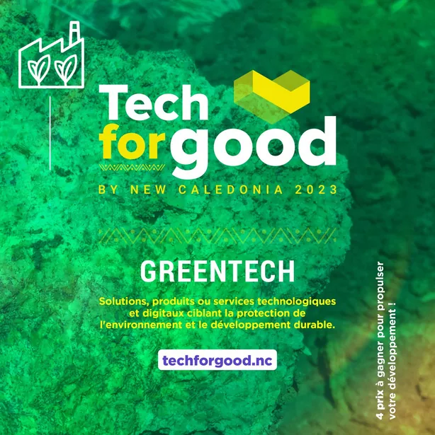
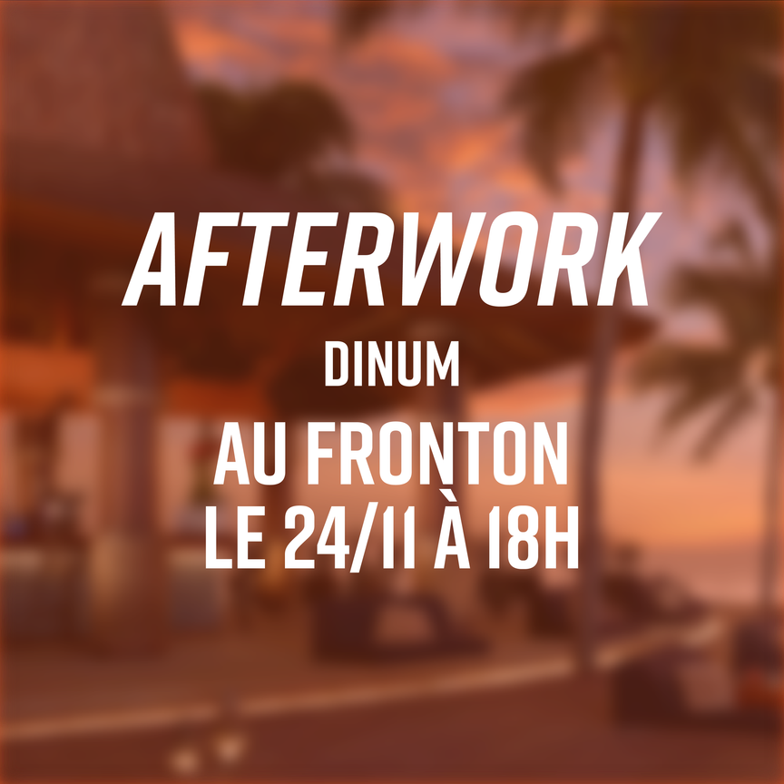
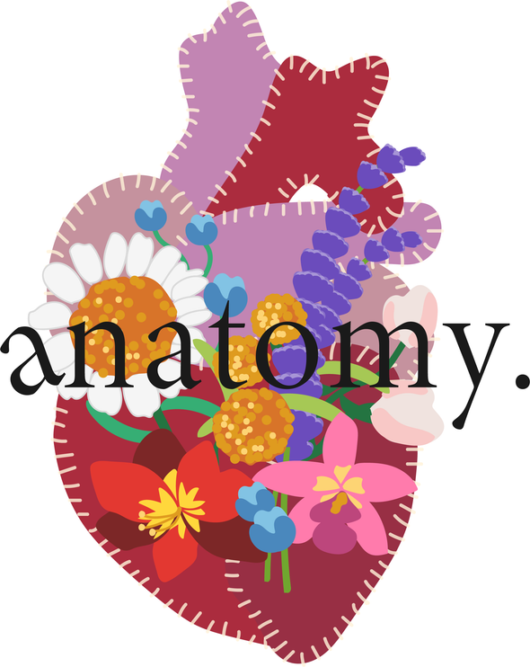
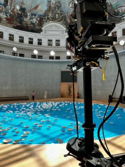

Work-study at Canalchat Grandialogue
YURI Portfolio BAUSCH
Community Manager and Brand Content Creator
About me

I'm 22 and passionate about fashion, cinema and pop culture.
Fresh from a Bachelor's degree in communication strategy, I'm a Community Manager and Brand Content Creator. I help brands and companies craft engaging content, tailored to social media, blending creativity with strategic thinking.
I'm fluent in management and digital creation tools, and I know how to build impactful communication campaigns.
My background
Currently on a work-study placement at Canalchat Grandialogue as a Production Assistant, as part of my M1 DA Vidéo (ESD Paris). Based in the Paris area.
Professional experience
Production Assistant · Canalchat Grandialogue — Work-study
Work-study placement alongside my M1 DA Vidéo (ESD Paris).
Digital production · PhotoCineRent — Paris
- Prepared shooting equipment (cameras, lenses, accessories)
- Assisted production during studio and live shoots
- Managed stock and maintenance of audiovisual gear
Community Manager · Government of New Caledonia — Nouméa
- Designed and wrote content for institutional social media (Facebook, Instagram)
- Created visuals aligned with brand guidelines
- Analysed performance and proposed distribution optimisations
Content creation & CM · France Télévisions — Nouméa
- Produced digital content tailored to web and social formats
- Took part in community moderation and management
Education
M1 DA Vidéo · ESD — Paris
Work-study placement at Canalchat Grandialogue.
Bachelor's MMI · IUT d'Angoulême
Major in Communication Strategy.
DUT MMI · IUT of New Caledonia — Nouméa
Languages
Digital communication
- Community management
- Brand content
- Social media strategy
- Performance analysis (Meta Business Suite, Analytics)
Digital creation
- Visual design (Photoshop, Illustrator)
- Motion design
- Video editing (Premiere Pro, After Effects)
Audiovisual
- Filming
- Audio recording
- Equipment handling
My work

Government of New Caledonia — Tech for Good
Tech for Good campaign and social media visuals for the government.
Social media · Community ManagementView project →
Le Lieu Utile
Visual identity and brand content for a hybrid venue.
Branding · Brand ContentView project →
anatomy.
Full branding for a fictional clothing label.
Personal project · Fashion brandingView project →
Saint Laurent — Fashion Week
Video technician on the Saint Laurent HOMME show broadcast.
Audiovisual production · TechnicalView project →
Shoots & independent projects
Camera, production and directing assistant on independent films.
Audiovisual · Film setsView project →Let's bring your ideas to life
Currently on a work-study placement at Canalchat Grandialogue and studying for my M1 DA Vidéo at ESD. A project, a brand to grow, or a collaboration? Let's talk.